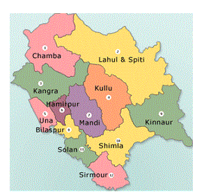

WELCOME TO
KANGRA VALLEY

INTRODUCTION
Kangra Valley is situated in Himachal Pradesh, India. It is a popular tourist destination, with the peak season around March and April. Dharamshala, the headquarters of Kangra district, lies on the southern spur of Dhauladhar in the valley.
Kangra Valley Railway is a 164 km long narrow gauge railway line that connects the valley with Pathankot, the nearest railhead on broad gauge railway network. LOCATION
The valley is filled with numerous perennial streams, which irrigate the valley. The valley has an average elevation of 2000 ft. The highest peak on the Dhauladhar range (White Mountain) which marks the boundary between the valley and Chamba, reaches 15,956 ft. The peaks of the range are approximately 13,000 ft above the valley floor, rising sharply from its base with no low hills in between.
LOCATION
The valley is filled with numerous perennial streams, which irrigate the valley. The valley has an average elevation of 2000 ft. The highest peak on the Dhauladhar range (White Mountain) which marks the boundary between the valley and Chamba, reaches 15,956 ft. The peaks of the range are approximately 13,000 ft above the valley floor, rising sharply from its base with no low hills in between.
The Kangra District of Himachal Pradesh is situated in the Western Himalayas between 31°2 to 32°5 N and 75° to 77°45 E. The district has a geographical area of 5,739 km. which constitutes 10.31% of the geographical area of the State. According to 2001 census, the total population of the district was 1,339,030, which is the highest in the state (22.50% of the population).


Kangra Valley Railway is a 164 km long narrow gauge railway line that connects the valley with Pathankot, the nearest railhead on broad gauge railway network.
The Kangra District of Himachal Pradesh is situated in the Western Himalayas between 31°2 to 32°5 N and 75° to 77°45 E. The district has a geographical area of 5,739 km. which constitutes 10.31% of the geographical area of the State. According to 2001 census, the total population of the district was 1,339,030, which is the highest in the state (22.50% of the population).